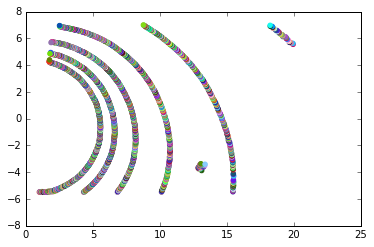
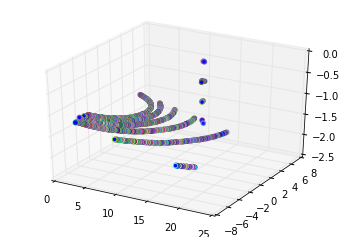
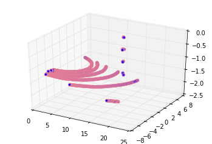

PyPCD
-
본 챕터에서는 pypcd의 기본적인 파일 입력, Numpy변환, 저장 방법에 대하여 정리 하였습니다.
- pypcd는 Point Cloud Library에 기반한 PCD파일 읽기/쓰기가 가능한 Pure Python module 입니다.
- 특징으로는 ROS 메시지 전송을 지원 합니다.
PCL-To-All Docker에는 설치 되어 있지 않습니다.
%load_ext watermark
%watermark -d -v -p pypcd
2018-11-23
CPython 2.7.12
IPython 5.8.0
pypcd 0.1.1
import sys
!{sys.executable} -m pip install --user pypcd
Requirement already satisfied: pypcd in /usr/local/lib/python2.7/dist-packages
Requirement already satisfied: python-lzf in /usr/local/lib/python2.7/dist-packages (from pypcd)
Requirement already satisfied: numpy in /usr/local/lib/python2.7/dist-packages (from pypcd)
[33mYou are using pip version 9.0.1, however version 18.1 is available.
You should consider upgrading via the 'pip install --upgrade pip' command.[0m
import pypcd
import numpy as np
import os
os.chdir("/workspace/3D_People_Detection_Tracking")
cloud = pypcd.PointCloud.from_path('./sample/lobby.pcd')
---------------------------------------------------------------------------
ValueError Traceback (most recent call last)
<ipython-input-2-94c291a77ae6> in <module>()
----> 1 cloud = pypcd.PointCloud.from_path('./sample/lobby.pcd')
/usr/local/lib/python2.7/dist-packages/pypcd/pypcd.pyc in from_path(fname)
733 @staticmethod
734 def from_path(fname):
--> 735 return point_cloud_from_path(fname)
736
737 @staticmethod
/usr/local/lib/python2.7/dist-packages/pypcd/pypcd.pyc in point_cloud_from_path(fname)
300 """
301 with open(fname, 'rb') as f:
--> 302 pc = point_cloud_from_fileobj(f)
303 return pc
304
/usr/local/lib/python2.7/dist-packages/pypcd/pypcd.pyc in point_cloud_from_fileobj(f)
282 if ln.startswith('DATA'):
283 metadata = parse_header(header)
--> 284 dtype = _build_dtype(metadata)
285 break
286 if metadata['data'] == 'ascii':
/usr/local/lib/python2.7/dist-packages/pypcd/pypcd.pyc in _build_dtype(metadata)
208 fieldnames.extend(['%s_%04d' % (f, i) for i in xrange(c)])
209 typenames.extend([np_type]*c)
--> 210 dtype = np.dtype(zip(fieldnames, typenames))
211 return dtype
212
ValueError: field '__0000' occurs more than once
./sample/lobby.pcd
/workspace/3D_People_Detection_Tracking
cloud.get_metadata()
{'count': [1, 1, 1, 1],
'data': 'ascii',
'fields': ['x', 'y', 'z', 'rgb'],
'height': 1,
'points': 2750,
'size': [4, 4, 4, 4],
'type': ['F', 'F', 'F', 'F'],
'version': '0.7',
'viewpoint': [0.0, 0.0, 0.0, 1.0, 0.0, 0.0, 0.0],
'width': 2750}
print(cloud.pc_data['rgb'])
[ 0. 0. 0. ..., 0. 0. 0.]
array로 변경
new_cloud_data = cloud.pc_data.copy()
# we need numpy now
import numpy as np
# convert the structured numpy array to a ndarray
new_cloud_data = cloud.pc_data.view(np.float32).reshape(cloud.pc_data.shape + (-1,))
new_cloud_data.shape[0]
2750
new_cloud_data
array([[ 1.00166738, 5.48460579, -1.49390364, 0. ],
[ 1.01868272, 5.46968126, -1.49079776, 0. ],
[ 1.03777063, 5.46609163, -1.49079776, 0. ],
...,
[ 18.39475441, -6.8848362 , -1.71836269, 0. ],
[ 18.24389076, -6.90107012, -1.70650947, 0. ],
[ 18.23457718, -6.97040224, -1.70790386, 0. ]], dtype=float32)
import sys
sys.path.append("/workspace/include")
import pcl_helper
n_random_color = 20
random_color = np.zeros(n_random_color,float)
for i in range(0,new_cloud_data.shape[0]):
#labbels[0]
new_cloud_data[i,3:4] = pcl_helper.rgb_to_float(pcl_helper.random_color_gen())
new_cloud_data[:,0:3]
array([[ 1.00166738, 5.48460579, -1.49390364],
[ 1.01868272, 5.46968126, -1.49079776],
[ 1.03777063, 5.46609163, -1.49079776],
...,
[ 18.39475441, -6.8848362 , -1.71836269],
[ 18.24389076, -6.90107012, -1.70650947],
[ 18.23457718, -6.97040224, -1.70790386]], dtype=float32)
new_cloud_data
array([[ 1.00166738e+00, 5.48460579e+00, -1.49390364e+00,
1.91391502e-38],
[ 1.01868272e+00, 5.46968126e+00, -1.49079776e+00,
2.06848245e-38],
[ 1.03777063e+00, 5.46609163e+00, -1.49079776e+00,
6.83871486e-39],
...,
[ 1.83947544e+01, -6.88483620e+00, -1.71836269e+00,
5.10465005e-40],
[ 1.82438908e+01, -6.90107012e+00, -1.70650947e+00,
2.31961699e-39],
[ 1.82345772e+01, -6.97040224e+00, -1.70790386e+00,
1.92780974e-39]], dtype=float32)
After decode Tool
%matplotlib inline
# Now visualize the points with matplotlib
import matplotlib.pyplot as plt
# split the rgb column into three columns: red, green and blue
rgb_columns = pypcd.decode_rgb_from_pcl(cloud.pc_data['rgb'])
# normalize the rgb values (they should be between [0, 1])
rgb_columns = (rgb_columns / 255.0).astype(np.float)
# Plot again with color
plt.scatter(new_cloud_data[:, [0]], -new_cloud_data[:, [1]], color=rgb_columns)
plt.axis('scaled');

from mpl_toolkits.mplot3d import Axes3D
# Create a figure with a subplot with three axes
fig = plt.figure()
ax = fig.add_subplot(111, projection='3d')
ax.scatter(new_cloud_data[:,0], new_cloud_data[:,1], new_cloud_data[:,2], color=rgb_columns);

type(rgb_columns)
numpy.ndarray
rgb_columns.shape
(2750, 3)
rgb_columns.dtype
dtype('float64')
rgb_columns
array([[ 0.81568627, 0.40784314, 0.16470588],
[ 0.88235294, 0.23529412, 0.87843137],
[ 0.29019608, 0.46666667, 0.55686275],
...,
[ 0.01960784, 0.55686275, 0.97254902],
[ 0.09803922, 0.25882353, 0.14901961],
[ 0.07843137, 0.99215686, 0.95294118]])
without decode Tool
rgb_columns1 = np.asarray(pcl_helper.random_color_gen())
type(rgb_columns1)
numpy.ndarray
rgb_columns1 = (rgb_columns1 / 255.0).astype(np.float)
from mpl_toolkits.mplot3d import Axes3D
# Create a figure with a subplot with three axes
fig = plt.figure()
ax = fig.add_subplot(111, projection='3d')
ax.scatter(new_cloud_data[:,0], new_cloud_data[:,1], new_cloud_data[:,2], color=rgb_columns1);

new_cloud_data[:,0]
array([ 1.00166738, 1.01868272, 1.03777063, ..., 18.39475441,
18.24389076, 18.23457718], dtype=float32)
rgb_columns
array([[ 0.81568627, 0.40784314, 0.16470588],
[ 0.88235294, 0.23529412, 0.87843137],
[ 0.29019608, 0.46666667, 0.55686275],
...,
[ 0.01960784, 0.55686275, 0.97254902],
[ 0.09803922, 0.25882353, 0.14901961],
[ 0.07843137, 0.99215686, 0.95294118]])
# And print some sample form the rgb column
print(new_cloud_data[:100, [3]]).reshape(1, -1)
[[ 1.91391502e-38 2.06848245e-38 6.83871486e-39 1.80425767e-38
2.00014266e-38 2.20729788e-38 1.46291790e-38 1.87544321e-38
7.10961388e-39 5.17087962e-39 1.88927753e-38 8.62621118e-39
1.74704910e-38 8.19271249e-39 1.48454610e-38 2.20485345e-38
6.35897192e-39 3.21686980e-39 1.27655263e-38 1.59758577e-38
2.24054873e-39 2.12435880e-38 9.59862263e-39 1.64438717e-38
2.14944611e-39 2.20090781e-38 1.72197553e-38 1.82830199e-38
1.33351051e-38 1.54079913e-39 1.32759885e-38 1.71286190e-38
8.82327438e-39 1.80263455e-39 2.21174868e-38 1.66724557e-38
1.54759823e-39 1.31544511e-38 1.47332997e-38 2.08111109e-38
2.03578525e-38 2.20660633e-38 1.09654996e-38 1.43230289e-38
1.60405935e-39 1.42220444e-38 1.13297994e-38 1.36603143e-38
2.30696046e-38 9.44780228e-39 1.64677541e-38 1.88774325e-38
2.19971461e-38 5.13602792e-39 9.96597582e-39 8.00565316e-39
4.61137057e-39 3.29052905e-41 2.21679882e-38 1.32062487e-38
6.86011268e-39 2.01598350e-38 6.88236811e-39 1.77541306e-38
1.75465619e-38 2.22309836e-38 1.17961473e-38 2.32099615e-38
5.39106704e-39 4.45478387e-40 2.77276188e-39 1.46311408e-38
2.36616252e-39 1.48855816e-38 2.09603001e-38 2.00806715e-38
1.00414680e-38 1.57212025e-38 2.14299103e-38 1.02275408e-38
1.99090320e-39 3.09113409e-39 7.85733553e-39 1.48913606e-38
1.15186664e-38 1.34572297e-39 1.20232179e-38 1.62091893e-38
6.66108486e-39 1.89147771e-38 2.08793625e-38 2.33037854e-38
1.30877213e-38 2.35087842e-38 2.24140632e-38 5.56645216e-39
3.06441553e-40 1.48294372e-38 8.36631235e-40 3.40540750e-39]]